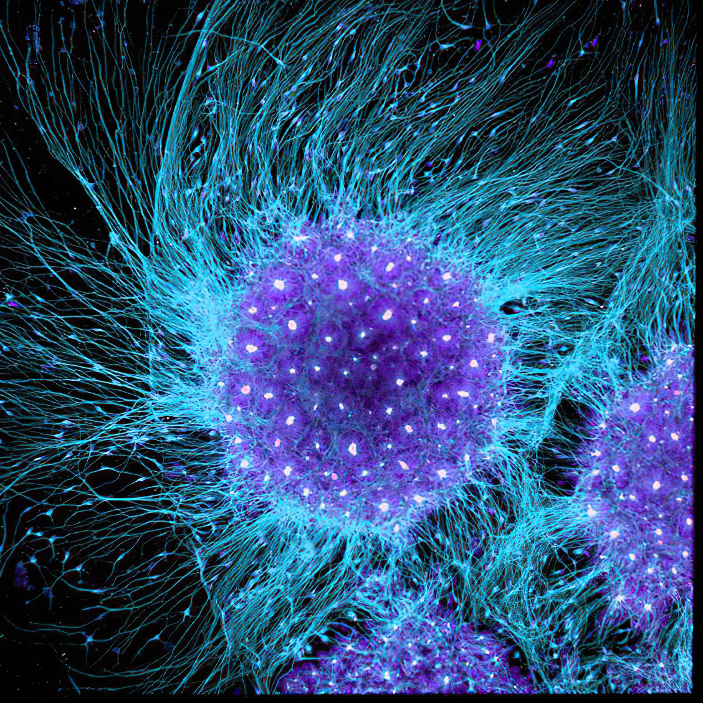
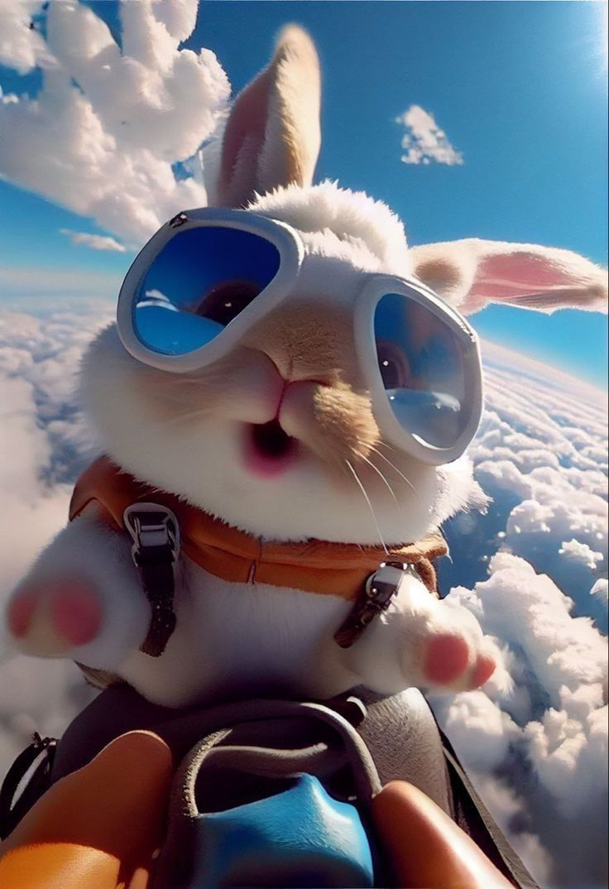
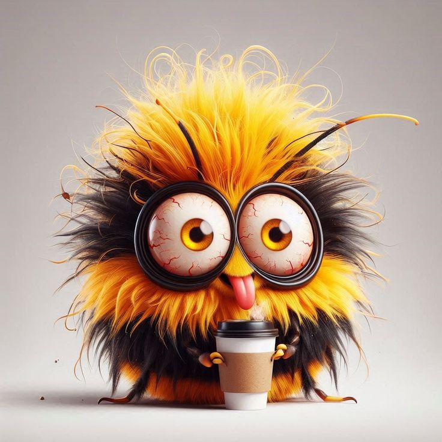

Research
研究方向

显微成像
- 共聚焦显微镜
- 多光子显微镜
- 转盘共聚焦显微镜
- 光声显微镜

超快光学
- 空心光纤
- Multi Pass Cell
- MIIPS
- Dual Prism

超分辨成像
- STED显微镜
- PALM/STORM
- MiniFlux显微系统

光学仪器开发
- Autocorrelator 脉宽检测仪
- Frog 脉冲相位检测仪器
- Spectrum 光谱仪
- 激光布拉格光栅切割
医疗仪器开发
- 医用导丝切割机
- 眼科OCT成像仪
- 流式细胞仪
Ph.D. Supervisor
博士生导师
Hao Xie(谢浩)
中科院物理研究所 特聘副研究员
Master Supervisor
硕士生导师

Kai Liu(刘锴)
高级工程师
Administrative Assistant
行政助理

Chunlei Peng(彭春蕾)
宗师级 行政助理
Post-Doctoral
博士后
Bo Li(李博)
Na Dong(董钠)
Engineer
工程师

Dongrun Li(李东润)
生物系统工程师
Weinan Guan(管伟楠)
光学工程师
Jiangshan Cai(蔡江山)
光学工程师
Fu-mei Chai(柴付美)
光学工程师
Ning Xu(徐宁)
光学工程师
Huai-yuan Qin(秦怀远)
光学工程师
Lei Pan(潘磊)
电子电路工程师
Ph.D.
博士
Cong Wang(王聪)
Yunfeng Song(宋云峰)
Jiaxin Liu(刘佳鑫)
Master
硕士研究生
胡子睿
23届硕士研究生
Zirui Hu(胡子睿)
刘昊儒
23届硕士研究生
Haoru Liu(刘昊儒)
王豪
23届硕士研究生
Hao Wang(王豪)
余波浩
23届硕士研究生
Bohao Yu(余波浩)
李小凡
24届硕士研究生
Xiaofan Li(李小凡)
黄增源
24届硕士研究生
Zengyuan Huang(黄增源)
邱洪标
24届硕士研究生
Hongbiao Qiu(邱洪标)
曾好
24届硕士研究生
Hao Zeng(曾好)
张晓格
24届硕士研究生
Xiaoge Zhang(张晓格)
刘池
24届硕士研究生
Chi Liu(刘池)
田翔宇
25届硕士研究生
Xiangyu Tian(田翔宇)
联合招聘公告
联合招聘博士后研究员等各个层次的非独立和独立PI层次的人才。宇宙级Idea待领取，大Paper发到手软。